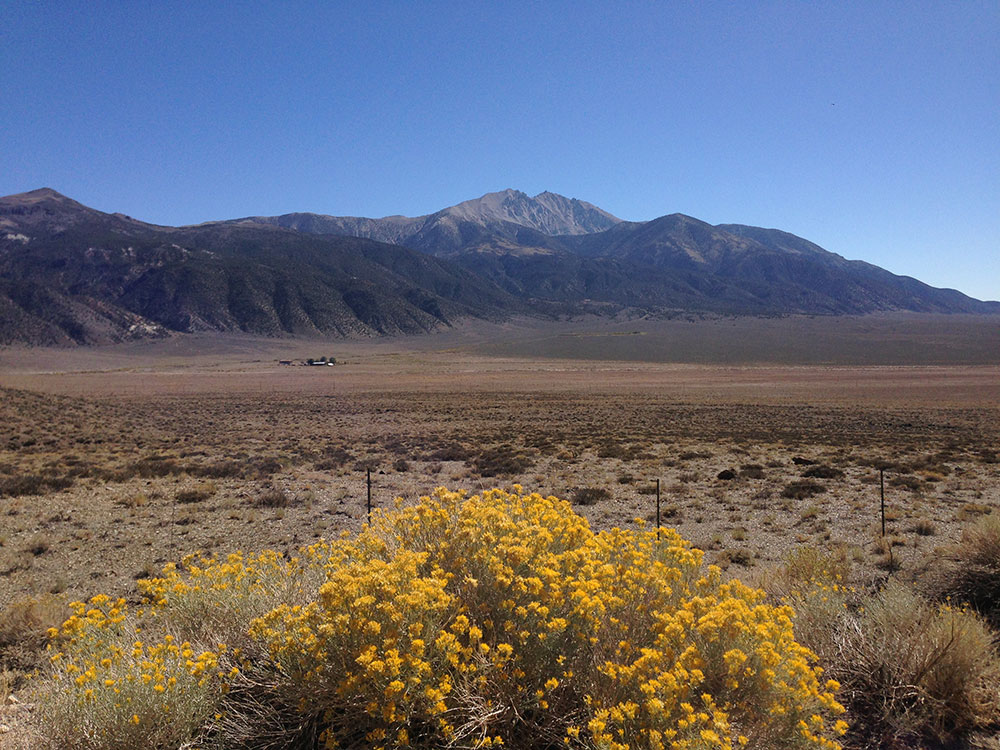
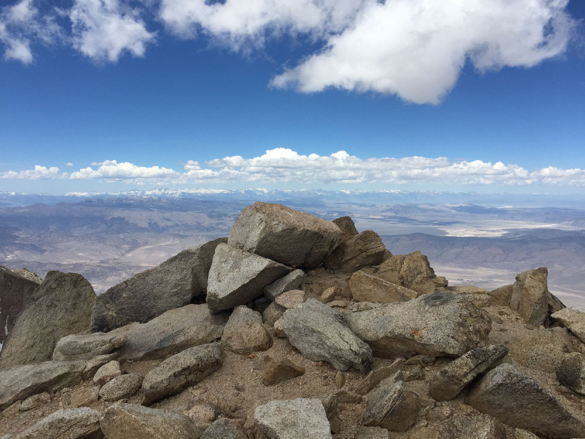
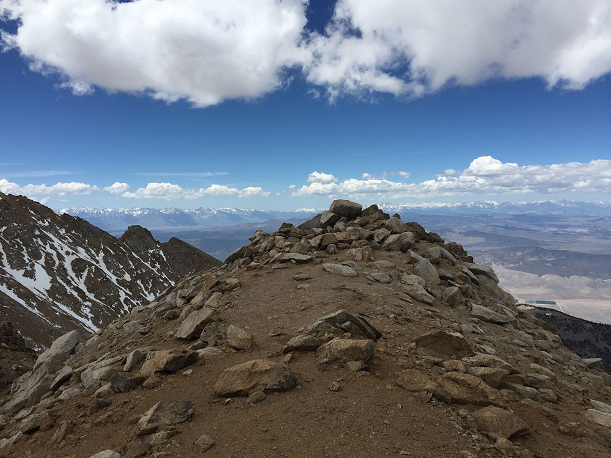
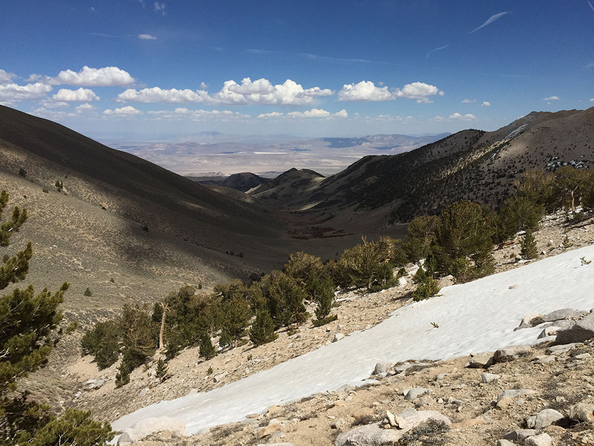
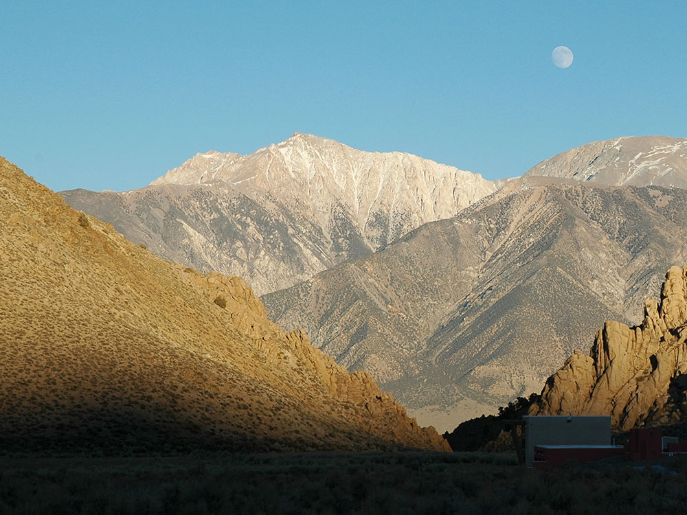

Massive Great Basin sand dune recreation area featuring off-highway vehicle riding, sandboarding, primitive camping, historic Pony Express sites, and striking desert landscapes.
Annual Recreation Pass: $90 per vehicle
How to Get There
From Fallon (25 mi): Follow US-50 East for approximately 25 miles through the high desert of Churchill County and look for the recreation area on the north side of the highway near the base of the Stillwater Range.
Overview
Sand Mountain Recreation Area is home to the largest single sand dune in the Great Basin, a massive formation about 3.5 miles long and nearly 600 feet high that rises dramatically from the desert floor along US-50. The dune is a remnant of ancient Lake Lahontan shorelines, built up over thousands of years by wind, and its sand is known to "sing" or boom under certain conditions. The Bureau of Land Management manages the area for recreation and for the protection of the rare Sand Mountain blue butterfly. People come for off-highway vehicle riding, sandboarding, dune hiking, photography and the nearby Sand Springs Pony Express Station.
Access
Sand Mountain is on US-50 about 25 miles east of Fallon, in Churchill County, on the north side of the highway at the base of the Stillwater Range. The entrance road leaves the highway and is easy to find. Most visitors drive from Fallon, Carson City or Reno, and many bring off-highway vehicles on trailers. The stretch of US-50 is remote with few services, so plan ahead for fuel, water and supplies, and a recreation pass is required.
Seasons
The recreation area is open year-round, but the seasons greatly affect the experience. Spring and fall are the most popular, with pleasant temperatures, and weekends can be busy with off-highway riders. Summer is very hot on the dune, and the sand can burn bare feet, so early morning and evening are best. Winter is cold, and wind can be strong, but it is a quiet and scenic time to hike. Some areas have seasonal restrictions to protect the blue butterfly, so check BLM notices and stay on designated routes.
Things to Do
Climb the Largest Dune in the Great Basin
Sand Mountain's long ridge and steep slopes offer a challenging climb with wide views over the desert. Hikers can follow the crest of the dune and experience the "booming" sand on dry days.
Ride Off-Highway Vehicles
The recreation area is a major destination for off-highway vehicles, with trails and open dune areas used by dune buggies, motorcycles and ATVs. A recreation pass is required and riders must follow safety rules.
Try Sandboarding and Sand Sledding
Visitors can slide down the dune on sandboards or sleds, which is a fun activity for families and adventurous travelers. Bring your own equipment and plenty of water.
Visit the Sand Springs Pony Express Station
Nearby, the ruins of the Sand Springs Station recall the Pony Express and overland mail routes of the 1860s. A short interpretive walk explains the history of the stop.
Camp and Stargaze
Primitive camping beneath dark desert skies gives a classic Nevada experience. The dune makes a dramatic silhouette at sunset and sunrise.
Top Trails
Sand Mountain Dune Climb
Length: Approximately 2 to 3 miles round trip
Elevation Gain: Approximately 600 feet
Difficulty: Strenuous
This unmarked route climbs the dune's flank to the top of the ridge. The sand is soft and the climb is tiring, but the views from the crest are broad and the descent is fun.
Sand Springs Pony Express Station Trail
Length: Approximately 0.5 miles round trip
Elevation Gain: Minimal
Difficulty: Easy
A short walk leads to the ruins of the historic Pony Express and stagecoach station, with signs describing life along the overland route. It is a pleasant stop in the cool part of the day.
Visitor Centers
Sand Mountain Recreation Area does not have a staffed visitor center. An information kiosk near the entrance provides maps, rules and details about the recreation pass, the Sand Mountain blue butterfly and safety. The BLM Carson City District and the Fallon visitor resources offer more information, including current closures. Because the area is remote, check the BLM website for conditions before you go.
Camping and Lodging
Primitive camping is available at the recreation area, with a developed campground and undeveloped sites near the dune. Services are basic, with no hookups and limited or no water, so campers should bring supplies. Hotels are in Fallon, about 25 miles west, where chain properties such as the Best Western Plus Fallon Inn and Suites and Holiday Inn Express offer rooms and nearby restaurants. Fernley and Carson City are about 1 to 1.5 hours away with more lodging, and Reno is about 1.5 hours away. For longer trips along US-50, Austin and Eureka have small motels and historic inns. Check each property's website for current availability.
This article uses material from the Wikipedia article and official pages for Bureau of Land Management: Sand Mountain Recreation Area, Travel Nevada, released under the Creative Commons Attribution-Share-Alike License 3.0.




